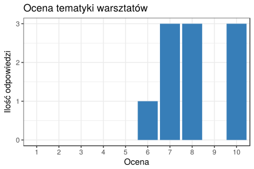
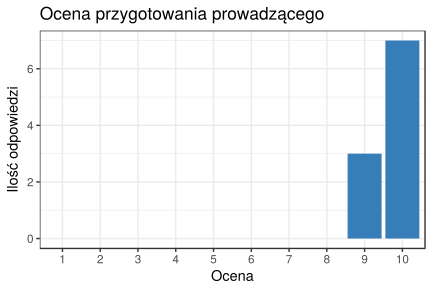
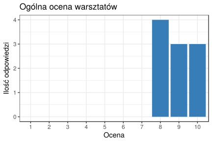

Pierwsze warsztaty organizowane przez szkoleniaR.pl w 2017 odbyły się 25 kwietna na konferencji DATA SCIENCE? AGHree!. Dotyczyły wykonywania różnych operacji na szeregach czasowych z wykorzystaniem pakietu xts i funkcji rollapply (z pakietu zoo). Była też trochę mowa o tym czym jest environment i jak może zostać wykorzystany do delikatnego oszukania funkcji rollapply by móc zebrać wyniki z każdej możliwej funkcji (niestety rollapply nie zawsze daje sobie z tym radę i trzeba mu pomóc).
Materiały można znaleźć w repozytorium na GitHubie (tutaj skrócony link: https://rmat.pl/warsztaty-xts).
Szybkie podsumowanie:
Po warsztatach przeprowadzona została krótka ankieta. Poniżej prezentowana jest skrócona analiza wyników;
- Ilość odpowiedzi: 10
Główne bolączki uczestników:
- Późna pora - niestety późna pora była trochę czynnikiem zewnętrznym. Jednak na przyszłość trzeba ją brać pod uwagę, gdyż to właśnie ona najczęściej przewijała się w ankiecie jako największy problem warsztatów
- Momentami zbyt szybko - w tym zakresie muszę popracować trochę nad metodą komunikacji z uczestnikami, by lepiej widzieć, czy jeszcze trzeba poczekać, czy można iść dalej z materiałem (testy pewnej koncepcji już na następnych warsztatach:)).
- Mało wizualizacji danych - tutaj rzeczywiście jest pole do poprawy. Użycie wykresów na pewno ułatwia odbiór prezentowanych treści i pozwala lepiej zorientować się co aktualnie dzieje się z danymi.
- Brak pomocnej literatury - to jest łatwe do poprawy;) Uaktualnione materiały już wkrótce pojawią się w repo.
A co było dobrze:
- Tempo prowadzenia - niektórym uczestnikom tempo warsztatów bardzo się podobało:) Jednak cały czas uważam, że zarządzaniem szybkością przekazywania wiedzy to pole do największego popisu.
- Jasny sposób przekazywania wiedzy - jest to chyba najważniejsza sprawa w prowadzeniu warsztatów. Także bardzo się cieszę, że udało się uzyskać ten efekt.
- Stała widoczność tworzonego kodu - kod był tworzony na bieżąco (nie było wyświetlanego wcześniej przygotowanego kodu z prezentacji), także pewnie to był czynnik który ułatwił odbiór. Tutaj na pewno tego się będę trzymał:)
- Opis kodu i repozytorium - pracując w R chyba najłatwiejszym sposobem przygotowania warsztatów jest stworzenie wszystkiego w Rmarkdown. Późniejsza publikacja materiałów nie jest już wtedy żadnym problemem.
Ocena punktowa:
Tematyka:
Niestety nie udało się trafić idealnie w potrzeby uczestników dotyczące tematyki warsztatów. Tak bywa w przypadku, gdy temat zostaje narzucony przez prowadzącego bez wcześniejszej konsultacji z grupą docelową:( W przyszłości na pewno uda się poprawić ten wynik, choć i tak nie było tak źle - najniższa ocena to 6, a trafiły się nawet 10. Wykres poniżej:

Prowadzący:
Do wyników dotyczących prowadzącego podchodzę z rezerwą, gdyż wyglądają trochę zbyt dobrze…;)

Ogólna ocena:
Końcowa ocena warsztatów jest jest bardzo satysfakcjonująca. W przyszłości na pewno trzeba poświęcić trochę więcej czasu na ustalenie tematu z grupą docelową, by lepiej trafić w potrzeby uczestników. Warto również postarać się o organizację warsztatów o trochę wcześniejszej porze - o godzinie 18 ciężko już myśleć:)
